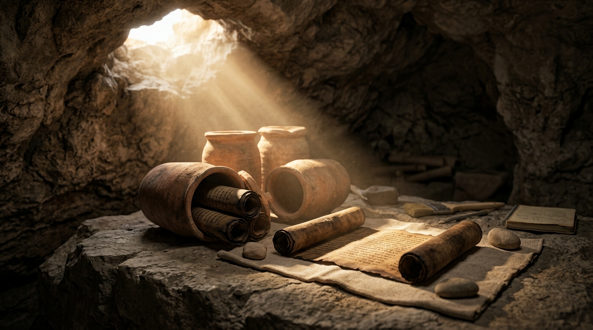

A Transmissão Fiel: Uma Análise Exaustiva da Preservação Textual das Escrituras Sagradas
Uma das indagações mais instigantes, cruciais e frequentemente levantadas tanto por estudiosos sérios quanto por céticos acadêmicos diz respeito à confiabilidade textual da Bíblia Sagrada. Visto que os autógrafos originais — os documentos redigidos diretamente de próprio punho pelos profetas, apóstolos e amanuenses inspirados — não existem mais no mundo físico, dependemos inteiramente de cópias manuscritas acumuladas ao longo de muitos séculos. Surge então a grande questão histórico-crítica: após milênios de transcrições manuais em papiro e pergaminho, realizadas numa época longínqua sem o auxílio da imprensa industrial, podemos confiar de maneira absoluta que o texto que lemos hoje reflete com exatidão a revelação original concedida por Deus?
A resposta fornecida pela papirologia, pela paleografia e pela ciência da crítica textual é um retumbante e fundamentado sim. Do ponto de vista puramente documental e histórico, nenhum outro conjunto de obras da antiguidade clássica — nem mesmo os escritos de Platão, Aristóteles, Homero ou Júlio César — possui uma base de evidências textuais tão vasta, precoce, diversificada e rigorosamente atestada quanto os textos que compõem o Antigo e o Novo Testamento. Este estudo aprofundado examina detalhadamente os mecanismos de transmissão, o rigor dos escribas massoretas, o impacto monumental das descobertas arqueológicas como os Rolos do Mar Morto, o papel da antiga tradução grega conhecida como Septuaginta, a formação histórica do cânon sagrado e os critérios científicos empregados pela crítica textual moderna para atestar a incorruptibilidade da Palavra de Deus.
Índice do Estudo:
- 1. A Transmissão do Antigo Testamento: O Rigor Absoluto dos Escribas Massoretas
- 2. Os Rolos do Mar Morto: A Surpreendente Confirmação Documental de Qumran
- 3. A Formação Orgânica do Cânon do Novo Testamento e a Abundância de Manuscritos Gregos
- 4. A Septuaginta (LXX): A Antiga Ponte Linguística e Teológica entre Testamentos
- 5. A Ciência da Crítica Textual: Analisando Variantes e Esclarecendo Dúvidas
- 6. Tabela Analítica Comparativa e Confiabilidade Histórica dos Manuscritos
1. A Transmissão do Antigo Testamento: O Rigor Absoluto dos Escribas Massoretas
A preservação do texto hebraico do Antigo Testamento constitui um dos feitos mais extraordinários da história literária da humanidade. Antes do estabelecimento formal das escolas massoréticas, a responsabilidade de transmitir o texto sagrado recaía sobre corporações de escribas especializados — inicialmente os soferim, que posteriormente evoluíram para os massoretas (palavra derivada de *masorah*, que significa "tradição"), ativos principal e estruturalmente entre os séculos VI e X d.C. nas academias de Tiberíades, na Galileia.
Para mitigar e eliminar qualquer margem de erro humano durante o processo exaustivo de cópia manual de rolos inteiros de pergaminho, os massoretas desenvolveram um sistema matemático de controle de qualidade sem precedentes na antiguidade. Eles não se limitavam a transcrever as palavras; eles contavam rigorosamente o número total de versículos, de palavras e de letras de cada livro bíblico. Identificavam com precisão exata qual era a letra central de cada livro, de cada seção e de todo o cânon hebraico. Caso uma única letra estivesse faltando, estivesse a mais, ou apresentasse um formato levemente alterado que comprometesse a leitura, o rolo inteiro era sumariamente rejeitado e colocado em quarentena ou enterrado para evitar contaminações textuais. O resultado desse labor titânico foi a fixação do Texto Massorético, cuja autoridade e precisão textual serviram de alicerce inabalável para a transmissão milenar da Lei e dos Profetas.
2. Os Rolos do Mar Morto: A Surpreendente Confirmação Documental de Qumran
Apesar da reputação de rigor técnico dos massoretas, por muitas décadas os críticos textuais liberais argumentavam que o texto hebraico poderia ter sofrido profundas corrupções e interpolações durante o nebuloso período anterior ao século X d.C., uma vez que os manuscritos hebraicos completos mais antigos disponíveis até então (como o Códice de Alepo e o Códice de Leningrado) datavam justamente dessa época tardia da Idade Média. Essa preposição cética desmoronou fragorosamente a partir do final de 1947, quando pastores beduínos descobriram casualmente jarros de cerâmica repletos de manuscritos antigos nas cavernas áridas de Qumran, situadas nas imediações da costa noroeste do mar Morto.
As escavações subsequentes revelaram milhares de fragmentos textuais datados paleograficamente entre o século III a.C. e o século I d.C., associados à comunidade ascética judaica dos essênios. Entre os achados mais impressionantes encontrava-se o Grande Rolo de Isaías (1QIsaᵃ), contendo o livro profético inteiro em um estado de conservação espantoso. Quando os eruditos procederam à análise comparativa rigorosa entre o texto de Isaías encontrado em Qumran (datado de cerca de 125 a.C.) e o Texto Massorético medieval (produzido cerca de mil anos depois), o resultado chocou o meio acadêmico internacional: após dez séculos de cópias manuais estritamente sucessivas, o texto manteve-se essencialmente idêntico em mais de 95% do seu conteúdo. As raras divergências consistiam quase que exclusivamente em pequenas variações ortográficas, erros óbvios de deslize de acoplamento visual de letras ou diferenças gramaticais menores que não afetavam de maneira alguma o sentido doutrinário, escatológico ou teológico de nenhuma passagem. Qumran provou de forma cabal que a transmissão do texto hebraico foi conduzida com um zelo quase sobre-humano.
3. A Formação Orgânica do Cânon do Novo Testamento e a Abundância de Manuscritos Gregos
No que tange ao Novo Testamento, a base documental que sustenta a autenticidade dos evangelhos e das epístolas não tem paralelo em nenhuma outra obra da literatura greco-romana. Para fins de comparação acadêmica, enquanto a obra "Guerra das Gálias" de Júlio César possui pouco mais de dez manuscritos sobreviventes confiáveis (sendo o mais antigo datado de mil anos após a morte do autor), e as tragédias de Sófocles contam com menos de duzentas cópias fragmentárias, o Novo Testamento cristão dispõe atualmente de mais de 5.800 manuscritos escritos em grego (a língua original), acompanhados por mais de 10.000 cópias em latim antigo (*Vulgata*) e milhares de outros testemunhos em copto, siríaco, etíope, armênio e gótico, totalizando dezenas de milhares de fontes textuais primitivas.
Além da vastidão quantitativa, destaca-se a proximidade cronológica entre os eventos históricos e as cópias remanescentes. Enquanto os autores clássicos se distanciam dos seus manuscritos mais antigos por intervalos que variam de quinhentos a mil e quinhentos anos, o Novo Testamento possui papiros expressivos datados já do final do século I e início do século II d.C. (como o famoso Papiro P52, contendo um trecho do Evangelho de João, datado por papirologistas respeitados por volta do ano 125 d.C., circulando na província do Egito poucas décadas após a morte do próprio apóstolo João). A formação do cânon — o reconhecimento oficial e litúrgico dos 27 livros inspirados — não decorreu de decretos arbitrários impostos por concílios eclesiásticos tardios (como erroneamente propõem teorias conspiratórias modernas), mas consolidou-se organicamente à medida que as igrejas locais reconheciam imediatamente a autoridade apostólica intrínseca, a coerência doutrinária inegociável e a autenticidade histórica irrefutável desses escritos sagrados à luz da tradição apostólica viva.
4. A Septuaginta (LXX): A Antiga Ponte Linguística e Teológica entre Testamentos
Um elemento fundamental na história dos textos antigos é a Septuaginta, frequentemente designada pelo numeral romano LXX. Trata-se da grandiosa tradução das Escrituras Hebraicas para a língua grega koiné, realizada em Alexandria, no Egito, a partir do século III a.C., inicialmente impulsionada pelas necessidades da numerosa comunidade judaica da diáspora que já havia perdido a fluência no hebraico clássico.
A Septuaginta exerceu um influxo colossal sobre o cristianismo nascente. Quando os autores do Novo Testamento (incluindo o apóstolo Paulo, o escritor aos Hebreus e os próprios evangelistas) redigiram os textos inspirados, eles citaram profusamente o Antigo Testamento utilizando majoritariamente o texto da Septuaginta. Além disso, a LXX serve como uma testemunha textual independente e de valor incalculável para a crítica textual moderna, pois reflete uma tradição de leitura hebraica muito mais antiga do que aquela que foi formalizada séculos depois pelos massoretas, permitindo aos eruditos solucionar passagens complexas ou ambíguas através da triangulação comparativa entre o hebraico original, os fragmentos de Qumran e a versão grega alexandrina.
5. A Ciência da Crítica Textual: Analisando Variantes e Esclarecendo Dúvidas
O volume imenso de manuscritos antigos gerou inevitavelmente a existência de discrepâncias acidentais entre cópias oriundas de diferentes regiões geográficas, um fenômeno amplamente estudado pela disciplina acadêmica denominada *crítica textual* (ou alta e baixa crítica das Escrituras). Ao contrário do que críticos superficiais tentam alegar — sugerindo que a existência de "variantes textuais" corromperia a Bíblia —, a realidade é exatamente o oposto: quanto maior o número de manuscritos disponíveis, mais fácil se torna para os críticos textuais isolar, rastrear e corrigir qualquer erro humano cometido por um escriba no passado remoto.
Os erros identificados nos manuscritos dividem-se em categorias previsíveis e mecânicas: erros involuntários de audição (quando um escriba ditava para outro e ocorria confusão fonética entre palavras homófonas), erros visuais (como o *homeoteleuton*, quando o olho do escriba saltava de uma linha para outra semelhante devido ao final idêntico das palavras), omissões de pequenas partículas gramaticais ou glosas marginais explicativas que acabavam sendo inseridas por engano no corpo principal do texto por copistas posteriores. Através de cânones científicos rigorosos — tais como preferir a leitura mais curta, a leitura mais difícil que explique a origem das outras, ou o testemunho das famílias de manuscritos geograficamente mais antigas e independentes —, a erudição bíblica moderna assegura que o texto reconstruído das Escrituras possui um grau de certeza superior a 99%. A esmagadora maioria das variantes textuais existentes restringe-se a questões de ortografia de nomes próprios, escolha de sinônimos ou ordem de palavras, não havendo sequer uma única doutrina central da fé cristã — como a divindade de Cristo, a Trindade, a expiação vicária ou a ressurreição corporal — que dependa de uma única passagem textual incerta ou debatida.
6. Tabela Analítica Comparativa e Confiabilidade Histórica
| Fonte Documental / Testemunho | Datação Estimada dos Originais ou Cópias | Volume Estimado de Manuscritos | Impacto Crítico na Transmissão Bíblica |
|---|---|---|---|
| Texto Massorético (TM) | Séc. VI ao X d.C. (com raízes seculares) | Centenas de cópias e códices hebraicos | A base padronizada e rigorosa do Antigo Testamento hebraico. |
| Rolos do Mar Morto (Qumran) | Séc. III a.C. até I d.C. | Aprox. 220 manuscritos bíblicos fragmentários | Prova documental irrefutável da estabilidade milenar do texto hebraico. |
| Manuscritos Gregos do NT | Séc. II até XVI d.C. | Mais de 5.800 cópias catalogadas | A base documental mais robusta e precoce de toda a literatura antiga. |
| Septuaginta (LXX) | A partir do Séc. III a.C. | Centenas de manuscritos antigos e patrísticos | Testemunho textual grego primário utilizado pelos apóstolos de Cristo. |
💡 Aplicação Prática: A Palavra Incorruptível e Eterna
O estudo aprofundado dos manuscritos antigos e da história da transmissão textual não enfraquece a fé; pelo contrário, fortalece-a sobre rocha sólida e inabalável. Compreender o zelo extremo dos escribas massoretas, o impacto revolucionário das descobertas arqueológicas nas cavernas de Qumran e a abundância monumental de papiros e códices do Novo Testamento assegura-nos de que a Bíblia que temos em nossas mãos e abrimos diariamente para meditação e estudo é, com exatidão histórica e providencial, a mesma Palavra inspirada que foi revelada aos profetas e apóstolos na antiguidade.
Deus não apenas inspirou as Escrituras no passado original, mas exerceu Sua soberania providencial para cuidar de cada detalhe de sua preservação e transmissão ao longo dos séculos, superando guerras, perseguições impiedosas e o desgaste natural do tempo. Que essa certeza absoluta renove profundamente o nosso amor, o nosso zelo e a nossa reverência pelas Escrituras Sagradas, encorajando-nos a ler, meditar e obedecer à Palavra daquele que vive e reina para todo o sempre. Como testifica eternamente a Escritura: *"Seca-se a erva, e cai a sua flor, mas a palavra de nosso Deus permanece para sempre"* (Isaías 40:8).
Navegação rápida:
- Voltar ⬅️ 3. Tabelas e Gráficos
- Próximo Estudo ➡️ 5. Dicionário Teológico
Apoie este projeto 🌱
Se este estudo foi útil, considere apoiar a manutenção do site.
Chave PIX (Celular):
marcosmontanaria@gmail.com